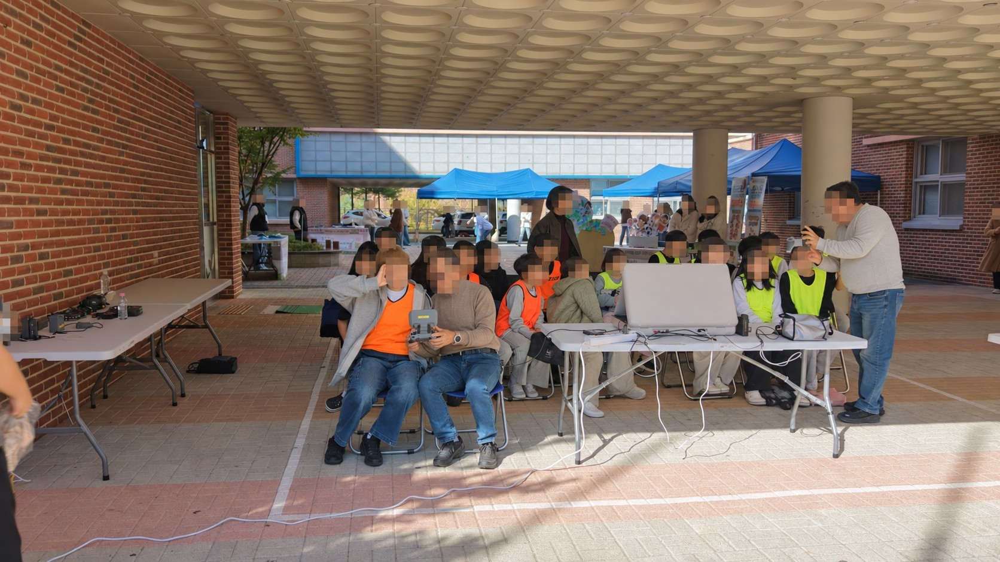

학교 · 기관 · 행사 맞춤형 체험교육장비 구성부터 교육·현장 운영까지 협의
교육 상담 ›드론으로 경험하는 항공과학과 미래기술

교육용 웹 시뮬레이터와 분석·설계 도구를 개발해 교육에 활용합니다.
상용 드론과 커스텀 FPV, 영상 수신·관람 장비를 연계합니다.
기체의 구조부터 운용까지 전 과정의 기술을 연결합니다.
연령·수준·기관 목적에 맞춰 교육 구성을 협의합니다.
야외 비행이 어려울 경우 실내 체험으로 전환하는 방안을 협의합니다.
체험 프로그램
기관이 선택하는 교육 서비스
완성 기체와 커스텀 드론을 비교하고 부품별 역할을 알아봅니다.
조종자 시점의 영상을 고글로 경험하고 대기 참가자는 모니터로 함께 관람합니다.
가상 조종 체험을 중심으로 구성하며 실제 기체 조종은 참가자 연령, 자격, 장소 및 안전 조건을 별도 확인합니다.
비가동 기체로 부품의 결합 구조와 조립 및 점검 과정을 체험합니다.
비행 원리, 전자제어, 회전운동과 에너지 등 교과 연계 주제를 체험합니다.
재난구조, 산림예찰, 항공촬영 등 민간 드론 활용 분야와 관련 직업을 탐색합니다.
자체 개발 기술 실습
교육·연구에 활용하는 기술 도구 · 일부 검증 중
P·I·D 제어값에 따른 가상 기체의 자세 및 반응 변화를 비교하는 교육용 비행제어 시스템입니다.
비행 기록과 그래프를 활용해 제어 응답과 진동 등 비행 데이터를 해석하는 분석 도구입니다.
회전과 불균형이 진동에 미치는 영향을 가상 실험으로 관찰하는 교육 도구입니다.
QGroundControl의 운용 흐름을 참고한 교육용 지상관제 환경에서 가상 임무와 안전 절차를 이해합니다.
가상 일반영상과 열화상을 비교하여 재난구조 및 환경 관찰에 쓰이는 영상 센서의 원리를 살펴봅니다.
송수신 장치와 안테나의 특성을 활용해 무선 영상 전달의 기초를 이해하는 계산 도구입니다.
기체 무게, 배터리와 추진계의 관계를 교육용 계산으로 살펴보는 도구입니다. 실제 비행시간을 보증하지 않습니다.
영상 송신·수신, 고글 및 모니터 연결 구조를 살펴보는 연구·교육 콘텐츠입니다. 실제 장비 호환성은 별도로 확인합니다.
3D 모델과 부품 배치를 통해 기체 구조와 설계 원리를 이해하는 콘텐츠입니다. 제작 적합성은 별도 검증이 필요합니다.
공역과 항공기상 정보를 확인하는 절차를 살펴보는 교육 콘텐츠입니다. 실제 비행에는 공식 정보 확인이 필요합니다.
지도, 항공촬영 및 환경 관찰의 원리를 다루는 개발·검증 중인 콘텐츠입니다.
기관별 맞춤 운영
드론 관찰, FPV 영상, 기초 과학 체험을 기관의 교육 목적과 참가자 수준에 맞춰 구성합니다.
진로 탐색, 기체 구조, 가상 임무비행을 기관의 교육 목적과 참가자 수준에 맞춰 구성합니다.
제어·진동·통신·설계 원리 실습을 기관의 교육 목적과 참가자 수준에 맞춰 구성합니다.
민간 활용·안전절차·가상 수색 및 임무운용을 기관의 교육 목적과 참가자 수준에 맞춰 구성합니다.
전시·공동 관람·순환형 체험 부스를 기관의 교육 목적과 참가자 수준에 맞춰 구성합니다.
다양한 센서 드론과 커스텀 FPV 드론, 영상 모니터를 활용한 직·간접 체험교육을 구성합니다. 실제 행사에 활용할 장비와 장비 간 호환성, 강사 인원은 교육 목적과 현장 여건에 따라 사전 협의합니다.
단순 체험은 하루 최대 3~4시간 범위, 부스는 1일 이상 일정에 맞춰 협의합니다. 참가자 연령, 인원, 장소, 조종자격, 보험과 승인 필요 여부를 확인하고, 야외 비행이 어려울 경우 실내 시뮬레이터·기체 전시·영상 관람으로 대체하는 방안을 협의합니다.